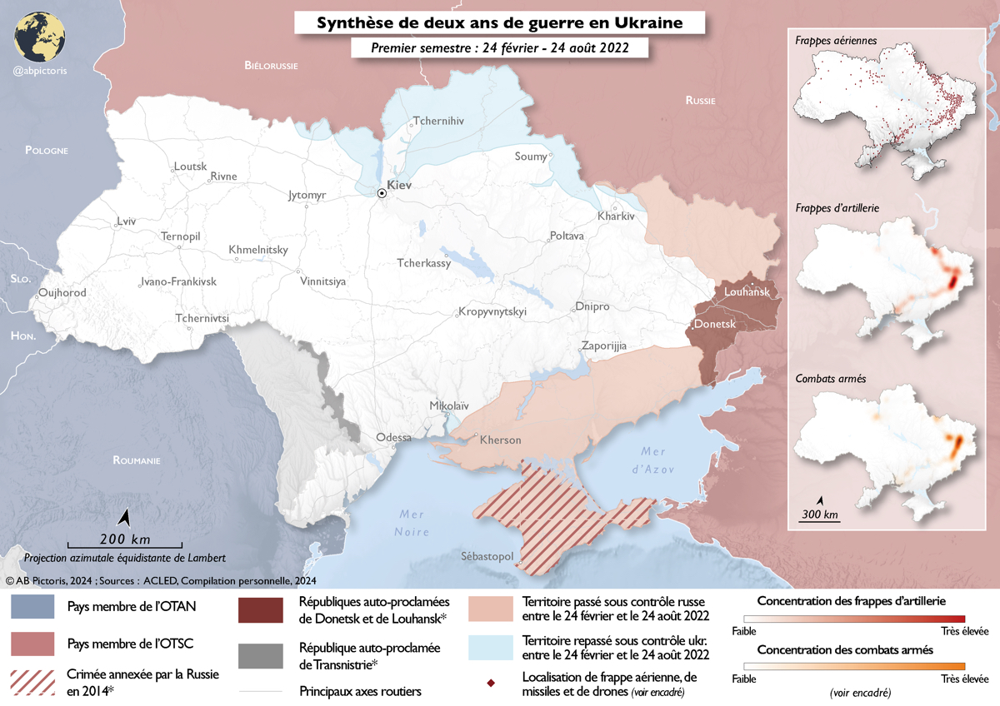
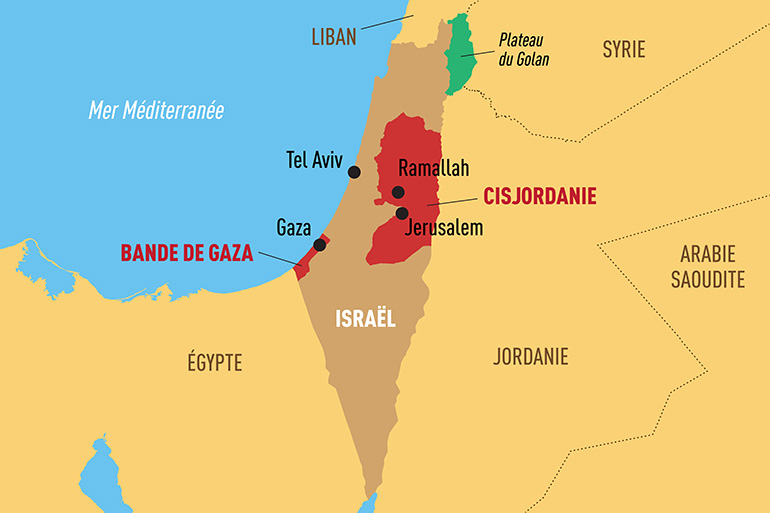
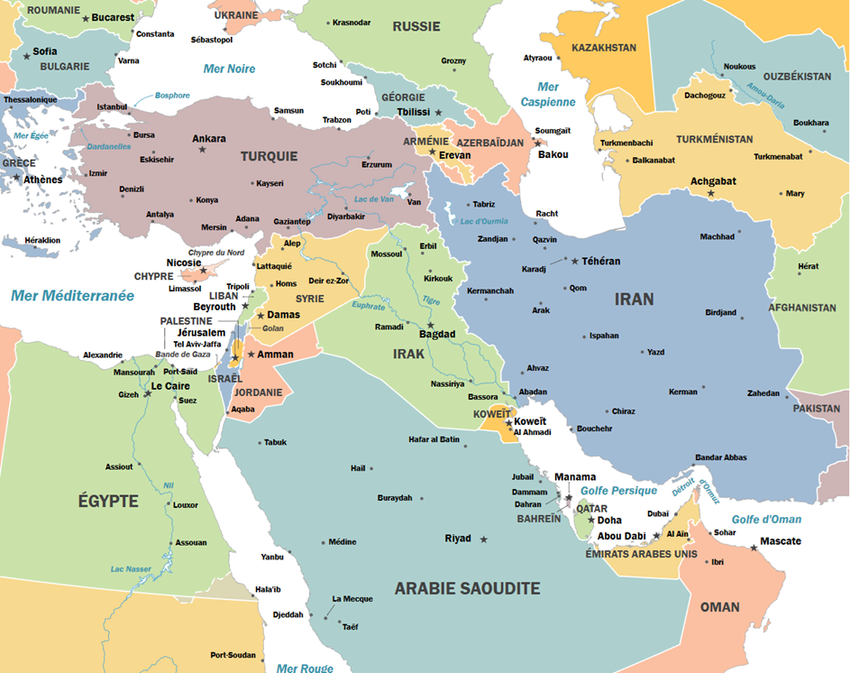
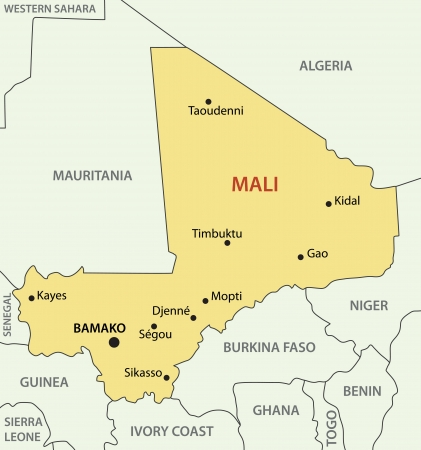

Dossier
Géopolitique

I. Les origines de la fracture (1991 - 2014)
L'Indépendance et le Mémorandum de Budapest (1994) : À la chute de l'URSS, l'Ukraine devient indépendante et hérite du 3e arsenal nucléaire mondial. En 1994, elle accepte de restituer ces armes à la Russie en échange de la garantie (signée par Moscou, Washington et Londres) du respect de ses frontières et de son intégrité territoriale.
La Révolution de Maïdan (2013-2014) : Le président ukrainien prorusse Viktor Ianoukovytch refuse de signer un accord d'association avec l'Union Européenne sous la pression de Moscou. Des manifestations massives pro-européennes éclatent à Kiev, menant à la fuite du président en Russie.
L'annexion de la Crimée et le Donbass (2014) : En représailles, la Russie déploie des "petits hommes verts" (forces spéciales sans insigne) pour annexer la péninsule stratégique de Crimée (qui abrite la flotte russe de la mer Noire à Sébastopol). Dans le même temps, Moscou déclenche et soutient militairement une guerre séparatiste dans la région industrielle du Donbass à l'est de l'Ukraine (Guerre hybride).
II. L'invasion à grande échelle et l'échec de la guerre éclair (2022)
Le 24 février 2022 : Vladimir Poutine lance une "Opération Militaire Spéciale" visant à décapiter le gouvernement ukrainien ("dénazification et démilitarisation"). L'offensive est lancée sur plusieurs fronts (Nord vers Kiev, Est, et Sud depuis la Crimée).
La résistance et le tournant de l'automne : L'armée russe échoue à prendre Kiev (échec de l'assaut aéroporté sur l'aéroport de Hostomel) face à une résistance ukrainienne farouche menée par Volodymyr Zelensky. À l'automne 2022, l'Ukraine lance deux contre-offensives foudroyantes, reprenant la région de Kharkiv au nord-est et la ville de Kherson au sud.
III. Le retour de la guerre d'attrition et de haute intensité (2023 - 2024)
La guerre de position : Le conflit se fige. La Russie met en place la "Ligne Sourovikine" (un réseau de défense en profondeur colossal avec champs de mines, dents de dragon et tranchées) qui brise la contre-offensive ukrainienne de l'été 2023. Le conflit ressemble désormais à la Première Guerre mondiale, dominé par l'artillerie.
L'innovation tactique et la guerre des drones : Ce conflit marque une révolution militaire. On observe une utilisation massive de drones FPV (First Person View) modifiés avec des explosifs pour détruire des blindés, de munitions rôdeuses (Shahed iraniens), et une omniprésence de la guerre électronique (brouillage). En mer Noire, l'Ukraine (bien que n'ayant quasiment plus de marine) réussit à repousser la flotte russe grâce à des drones navals de surface (USV).
IV. Économie de guerre et internationalisation du conflit (2025 - 2026)
Le défi logistique et industriel : Le conflit se transforme en une guerre d'usure (attrition) où la capacité à produire des obus et des missiles est décisive. La Russie bascule officiellement en économie de guerre et s'appuie sur de nouveaux partenaires (livraisons massives de munitions par la Corée du Nord, drones d'Iran, soutien technologique de la Chine).
L'impasse stratégique actuelle : L'Ukraine, dépendante de l'aide militaire occidentale, mène une stratégie de défense active pour maximiser les pertes russes tout en préservant ses effectifs. Le conflit souligne l'urgence pour l'Europe de réarmer et de rebâtir une base industrielle et technologique de défense (BITD) capable de soutenir un effort de guerre de haute intensité sur le long terme.

I. Les racines du conflit et la création d'Israël (Fin XIXe - 1948)
Le Sionisme et le Mandat britannique : À la fin du XIXe siècle naît le sionisme (projet de création d'un foyer national juif en Palestine, alors sous empire Ottoman). En 1917, par la Déclaration Balfour, le Royaume-Uni (qui obtient le mandat sur la Palestine après la 1ère GM) soutient ce projet. Les tensions entre populations juives immigrées et arabes autochtones s'intensifient.
Le Plan de partage de l'ONU (1947) : Suite à la Shoah, l'ONU vote la Résolution 181 : la partition de la Palestine en un État juif, un État arabe, et Jérusalem sous contrôle international. Les dirigeants juifs acceptent, les dirigeants arabes refusent catégoriquement.
La Création d'Israël et la Première Guerre (1948) : David Ben Gourion proclame l'État d'Israël (14 mai 1948). Les armées arabes voisines attaquent immédiatement. Israël remporte cette guerre, agrandit son territoire. Pour les Palestiniens, c'est la Nakba (la "Catastrophe") : l'exode de plus de 700 000 réfugiés.
II. L'ère des grandes guerres interétatiques (1967 - 1973)
La Guerre des Six Jours (1967) : Victoire éclair et écrasante d'Israël contre l'Égypte, la Syrie et la Jordanie. Israël occupe le Sinaï, la bande de Gaza, la Cisjordanie, Jérusalem-Est et le plateau du Golan. L'ONU vote la Résolution 242 exigeant le retrait des territoires occupés en échange de la paix, posant le cadre juridique du conflit moderne.
La Guerre du Kippour (1973) : Attaque surprise de l'Égypte et de la Syrie. Israël repousse l'offensive mais subit un choc psychologique majeur. Cela ouvre la voie au réalisme politique : l'Égypte signe la paix avec Israël en 1978 (Accords de Camp David), récupérant le Sinaï et devenant le premier pays arabe à reconnaître Israël.
III. OLP, Intifadas et l'Espoir d'Oslo (1987 - 2005)
La Première Intifada et l'émergence du Hamas (1987) : Soulèvement populaire palestinien ("Guerre des pierres") dans les territoires occupés contre l'armée israélienne. C'est à ce moment qu'est créé le Hamas, mouvement islamiste qui refuse l'existence même d'Israël, s'opposant au Fatah (laïc) de Yasser Arafat (dirigeant de l'OLP).
Les Accords d'Oslo (1993) : Poignée de main historique entre Yitzhak Rabin et Yasser Arafat. Création de l'Autorité palestinienne, censée administrer des zones de Cisjordanie et Gaza. C'est l'espoir de la "Solution à deux États". Le processus s'enlise face aux extrémismes (Rabin est assassiné par un extrémiste juif en 1995, le Hamas multiplie les attentats suicides).
La Seconde Intifada (2000-2005) : Après l'échec des sommets de paix, un nouveau soulèvement palestinien, beaucoup plus militarisé et meurtrier, éclate. En réponse, Israël construit le mur de séparation en Cisjordanie et se retire unilatéralement de la bande de Gaza en 2005 (démantèlement des colonies juives de Gaza).
IV. La fracture palestinienne et les guerres de Gaza (2006 - 2023)
La prise de pouvoir du Hamas (2007) : Le Hamas remporte les élections législatives palestiniennes et chasse l'Autorité palestinienne de Gaza par la force en 2007. La gouvernance palestinienne est fracturée : le Hamas (considéré comme terroriste) contrôle Gaza, le Fatah administre partiellement la Cisjordanie.
Le Blocus et l'Asymétrie : Israël et l'Égypte imposent un blocus strict sur Gaza pour empêcher l'armement du Hamas. S'ensuit une série de guerres asymétriques (2008, 2012, 2014, 2021) où le Hamas tire des roquettes vers Israël (interceptées par le "Dôme de fer"), et Israël réplique par des frappes aériennes destructrices sur cette zone ultra-dense.
V. Le 7 Octobre 2023 et le basculement régional (2023 - 2026)
L'attaque du 7 Octobre 2023 : Le Hamas lance une attaque terroriste massive et inédite sur le sol israélien, causant la mort de près de 1 200 personnes et prenant plus de 250 otages. C'est le plus grand traumatisme d'Israël depuis sa création, réduisant à néant toute doctrine de coexistence pacifique à court terme.
La guerre totale à Gaza : Israël déclenche l'opération "Glaives de fer" avec pour objectif l'éradication militaire du Hamas. L'offensive terrestre et aérienne provoque une crise humanitaire sans précédent et la destruction quasi totale de l'infrastructure de la bande de Gaza, entraînant une forte polarisation diplomatique mondiale et l'intervention de la justice internationale (CIJ et CPI).
L'extension au front nord et régional (2024-2026) : Le conflit agit comme un détonateur régional. Le Hezbollah libanais ouvre un second front au nord d'Israël, provoquant l'évacuation de dizaines de milliers de civils israéliens et une vaste campagne de frappes croisées. En parallèle, les rebelles Houthis du Yémen ciblent le trafic maritime mondial en mer Rouge, forçant les États-Unis, la France et le Royaume-Uni à déployer des coalitions navales pour sécuriser cette artère commerciale mondiale.
Impasse stratégique (2026) : Aujourd'hui, la solution à deux États semble plus éloignée que jamais. Israël fait face au défi de l'administration et de la sécurisation post-conflit d'une enclave dévastée, tandis que la Cisjordanie connaît un niveau de violence endémique. L'Autorité palestinienne, affaiblie, peine à incarner une alternative politique viable dans ce paysage fracturé.

I. La fracture matricielle : Du partenariat au basculement (1953 - 1979)
L'axe Washington-Téhéran (L'ère du Shah) : Après le coup d'État de 1953 (Opération Ajax orchestrée par la CIA), l'Iran du Shah Mohammad Reza Pahlavi devient le pilier de la stratégie américaine au Moyen-Orient (la "doctrine des deux piliers" avec l'Arabie saoudite) pour contenir l'URSS.
L'alliance périphérique avec Israël : Bien que non officielle, la coopération entre Tel-Aviv et Téhéran est majeure. Elle est fondée sur la "doctrine de la périphérie" de Ben Gourion (s'allier avec les États non arabes de la région). L'Iran fournit du pétrole à Israël en échange d'un soutien militaire, technologique et sécuritaire (formation de la SAVAK, la police secrète iranienne).
La rupture révolutionnaire (1979) : L'avènement de la République islamique sous l'Ayatollah Khomeini fait voler ce système en éclats. Khomeini conceptualise le rejet des puissances impérialistes : les États-Unis deviennent le "Grand Satan" et Israël le "Petit Satan", une entité jugée fondamentalement illégitime. La prise d'otages de l'ambassade américaine à Téhéran (1979-1981) scelle le divorce diplomatique avec Washington.
II. L'ère de la guerre asymétrique par procuration (1982 - 2012)
La doctrine de la "profondeur stratégique" : Conscient de son infériorité militaire conventionnelle (accentuée par la guerre Iran-Irak), l'Iran externalise sa défense. Le Corps des Gardiens de la Révolution Islamique (CGRI) crée l'Axe de la Résistance : un réseau de milices par procuration (proxies) encerclant Israël et menaçant les bases américaines.
Les pions de Téhéran : Le Hezbollah libanais (fondé en 1982, pivot du système), le Hamas et le Jihad Islamique palestiniens, les rebelles Houthis au Yémen, et diverses milices chiites en Irak et en Syrie.
La guerre de l'ombre : Pendant 40 ans, le conflit évite l'affrontement étatique direct. Israël réplique par des opérations clandestines : cyberattaques (virus Stuxnet en 2010), sabotages industriels et assassinats ciblés de scientifiques pour ralentir le programme nucléaire iranien clandestin.
III. De la diplomatie d'Obama à la rupture de Trump (2015 - 2020)
Le pari multilatéral d'Obama (Le JCPOA - 2015) : Pour désengager les États-Unis du Moyen-Orient (Pivot vers l'Asie), Obama tente de geler le risque nucléaire par la diplomatie. L'Iran accepte de brider son enrichissement d'uranium à 3,67 % en échange d'une levée des sanctions économiques. Israël dénonce un "accord historique de dupe" qui ne traite ni les missiles balistiques iraniens ni son expansionnisme régional.
Le paradoxe Trump et la "Pression Maximale" (2018) : Bien que sa doctrine America First prône l'isolationnisme et le retrait des troupes des théâtres moyen-orientaux (comme en Irak), Trump s'aligne totalement sur la position dure d'Israël. En 2018, il déchire unilatéralement le JCPOA et asphyxie l'économie iranienne par des sanctions massives. Ce choix pousse Téhéran à la rupture : relance agressive de l'enrichissement d'uranium et harcèlement maritime dans le golfe Persique.
Le dilemme du vide stratégique (Irak) : La volonté américaine de réduire sa présence militaire en Irak crée un vide immédiatement comblé par l'Iran, qui institutionnalise ses milices (Hachd al-Chaabi) au cœur de l'État irakien. En janvier 2020, Trump ordonne l'élimination par drone du général iranien Qassem Soleimani à Bagdad, frôlant la guerre ouverte.
IV. L'affrontement étatique direct (2024 - 2026)
La fin des proxies (2024) : À la suite de la guerre à Gaza, l'escalade d'avril et octobre 2024 marque une rupture historique : l'Iran tire pour la première fois des centaines de missiles balistiques directement depuis son propre sol vers Israël, brisant le tabou de la confrontation frontale.
Le seuil militaire et la "Guerre des 12 jours" (Juin 2025) : L'Iran pousse ses centrifugeuses jusqu'à un enrichissement à 60 % (proche du seuil militaire de 90 %). À la suite des frappes israéliennes de juin 2025 (Guerre des 12 jours), le régime de Téhéran s'est durci à l'extrême pour étouffer toute dissidence. En fin d'année 2025 et début 2026, l'inflation galopante et les pénuries provoquées par le conflit ont déclenché des manifestations populaires massives dans tout le pays.
Les massacres de janvier 2026 : La réponse des Gardiens de la Révolution (CGRI) a été d'une violence inédite, qualifiée par les ONG de "crimes contre l'humanité". Des rapports de l'ONU font état de massacres systématiques de manifestants par les forces de sécurité et d'une explosion des exécutions politiques (plus de 2 000 recensées, touchant particulièrement les minorités kurdes et baloutches). Face à l'imminence d'une bombe iranienne, Israël déclenche une campagne aérienne préventive majeure détruisant les sites fortifiés de Natanz et Fordow.
L'Opération "Epic Fury" (Février - Mai 2026) : L'impasse géopolitique et l'effondrement des verrous diplomatiques poussent l'administration américaine et Israël à mener une offensive stratégique conjointe de décapitation politique. Des frappes massives ciblent le cœur du pouvoir à Téhéran, éliminant le Guide suprême Ali Khamenei et le haut commandement du CGRI.

I. L'effondrement de 2012 et le succès de Serval (2012 - 2013)
La crise multidimensionnelle : En 2012, le Mali fait face à une rébellion indépendantiste touarègue (MNLA) dans le Nord (l'Azawad), rapidement phagocytée par des groupes jihadistes liés à Al-Qaïda (AQMI, Ansar Dine). L'armée malienne s'effondre et un coup d'État renverse le président à Bamako. Les jihadistes prennent le contrôle de tout le nord du pays (Tombouctou, Gao, Kidal).
L'Opération Serval (Janvier 2013) : Face à la menace d'une colonne jihadiste fonçant vers la capitale Bamako, le président français François Hollande déclenche l'opération Serval à la demande des autorités maliennes. C'est un succès tactique foudroyant : en quelques semaines, les forces spéciales et l'Armée de l'air françaises détruisent les sanctuaires terroristes et libèrent les villes du Nord.
II. L'enlisement asymétrique et l'Opération Barkhane (2014 - 2021)
La régionalisation (Barkhane) : En 2014, Serval est remplacée par Barkhane. L'approche devient régionale, couvrant 5 pays (le G5 Sahel : Mauritanie, Mali, Burkina Faso, Niger, Tchad) pour traquer les Groupes Armés Terroristes (GAT) sur un territoire vaste comme l'Europe.
L'hydre jihadiste : Malgré l'élimination de nombreux chefs terroristes par les forces françaises, la menace mute. Les groupes s'étendent vers le centre du Mali et la zone des "trois frontières" (Mali-Niger-Burkina Faso). Deux grandes coalitions s'affrontent et terrorisent les populations : le JNIM (lié à Al-Qaïda) et l'EIGS (État Islamique au Grand Sahara).
L'impasse politique : Si Barkhane remporte des succès militaires (victoires tactiques), l'État malien échoue à ramener l'administration, la justice et le développement dans les zones libérées. Ce vide étatique alimente la colère des populations civiles.
III. Putschs, rupture avec la France et l'arrivée de Wagner (2020 - 2023)
La succession de coups d'État : L'incapacité du gouvernement civil à sécuriser le pays provoque deux putschs militaires successifs (2020 et 2021), portant au pouvoir une junte dirigée par le colonel Assimi Goïta.
La guerre de l'information et la rupture : La junte instrumentalise un fort sentiment anti-français (attisé par des campagnes de désinformation russes sur les réseaux sociaux). Bamako se tourne vers la Russie et fait appel à la société militaire privée russe Wagner (désormais réorganisée sous l'égide de l'Africa Corps russe).
Le retrait français et international : Devenue indésirable, l'armée française quitte définitivement le Mali en août 2022 après 9 ans de présence. En 2023, la junte exige et obtient le départ de la MINUSMA (la force de maintien de la paix de l'ONU).
IV. Le nouvel ordre sahélien : L'Alliance des États du Sahel (2023 - 2026)
L'Alliance des États du Sahel (AES) : Le Mali, le Burkina Faso et le Niger (tous trois dirigés par des juntes militaires putschistes) s'allient fin 2023 pour former l'AES, un pacte de défense mutuelle. En 2024, ils annoncent leur retrait fracassant de la CEDEAO (l'organisation économique régionale ouest-africaine), actant une fracture géopolitique majeure en Afrique de l'Ouest.
Le pivot vers la Russie : Ces États assument une rupture stratégique totale avec l'Occident au profit de partenariats sécuritaires avec Moscou, et économiques avec la Chine et la Turquie.
Une situation sécuritaire très dégradée : Sur le terrain, les Forces armées maliennes (FAMa), appuyées par les mercenaires russes, ont repris la ville symbolique de Kidal aux rebelles touaregs fin 2023. Cependant, la violence atteint des records. Les affrontements avec le JNIM et l'État Islamique se multiplient, et les tactiques brutales de Wagner entraînent des massacres de civils, plongeant la région dans une crise humanitaire endémique sans perspective de résolution politique.
Histoire Militaire & Événements
Bataille d'Azincourt (25 Octobre 1415)
Belligérants : Royaume de France (Chevalerie lourde) contre Royaume d'Angleterre (Henri V).
Contexte : Guerre de Cent Ans. L'armée anglaise, épuisée et en infériorité numérique, tente de regagner Calais mais est bloquée par l'armée française.
Déroulement & Leçon tactique : Le terrain est boueux et le champ de bataille forme un entonnoir. La chevalerie française, engoncée dans de lourdes armures, s'embourbe et se gêne. Elle est décimée à distance par les archers anglais équipés d'arcs longs (longbows). C'est l'exemple absolu de l'incapacité d'une armée à adapter sa doctrine face au terrain et à une innovation tactique (la supériorité de l'infanterie à distance sur la charge de cavalerie).
Massacre de la Saint-Barthélemy (24 Août 1572)
Belligérants : Catholiques (soutenus par la monarchie et les Guise) contre Protestants (Huguenots).
Contexte : Guerres de religion en France. Le massacre survient quelques jours après le mariage d'Henri de Navarre (protestant, futur Henri IV) et de Marguerite de Valois (catholique), qui devait sceller la paix.
Déroulement : À la suite de la tentative d'assassinat de l'Amiral de Coligny (chef militaire protestant), le roi Charles IX et Catherine de Médicis décident d'éliminer les chefs huguenots présents à Paris. L'opération dégénère en un massacre populaire incontrôlable qui s'étend aux provinces, faisant des milliers de morts et creusant un fossé de sang entre les deux confessions.
Bataille d'Austerlitz (2 Décembre 1805)
Belligérants : L'Empire Français (Napoléon Ier) contre la Troisième Coalition (Russie d'Alexandre Ier et Autriche de François II).
Contexte : Surnommée la "Bataille des Trois Empereurs", elle a lieu un an jour pour jour après le sacre de Napoléon. La Grande Armée est isolée et en infériorité numérique en Europe centrale.
Déroulement & Leçon tactique : C'est le chef-d'œuvre absolu de l'art opératif. Napoléon feint la faiblesse, demande à négocier, et dégarnit volontairement son flanc droit pour inciter les Austro-Russes à l'attaquer et à quitter les hauteurs du plateau de Pratzen. Une fois l'ennemi piégé, le centre français attaque par surprise, reprend le plateau et coupe l'armée coalisée en deux. La victoire met fin au Saint-Empire romain germanique.
Bataille de Verdun (1916)
Belligérants : France contre Empire Allemand.
Contexte : Première Guerre mondiale. L'état-major allemand (général Falkenhayn) veut lancer une offensive massive sur un point symbolique pour "saigner à blanc" l'armée française et forcer sa capitulation.
Déroulement : Un déluge d'artillerie sans précédent s'abat sur les forts de Verdun. La résistance française tient grâce à un système ingénieux : le "tourniquet" (rotation rapide des régiments au front pour éviter l'épuisement total) et surtout la "Voie Sacrée", une route logistique ininterrompue organisée par le général Pétain pour acheminer munitions et relèves de jour comme de nuit.
Bataille de Diên Biên Phu (1954)
Belligérants : Armée française contre le Việt Minh (Général Giap).
Contexte : Guerre d'Indochine. Le commandement français installe un vaste camp retranché aéroterrestre dans une cuvette au nord-ouest du Vietnam pour couper les routes d'approvisionnement ennemies et forcer Giap à une bataille rangée.
Déroulement : Sous-estimant les capacités logistiques ennemies, les Français sont surpris lorsque Giap réussit l'exploit de hisser de l'artillerie lourde sur les collines dominant le camp. La piste d'aviation est rapidement détruite, privant la base de son pont aérien. C'est une leçon brutale sur l'encerclement, la logistique asymétrique et le renseignement, marquant la fin de la présence française en Indochine.
Guerre du Golfe / Opération Daguet (1991)
Belligérants : Coalition internationale de 35 pays (dont la division française Daguet) contre l'Irak de Saddam Hussein.
Contexte : En août 1990, l'Irak envahit et annexe le Koweït. L'ONU mandate une coalition militaire (dirigée par les États-Unis) pour libérer le pays.
Déroulement : La coalition débute par l'opération "Tempête du désert", une campagne de bombardements aériens massifs de 39 jours qui pulvérise les centres de commandement irakiens. S'ensuit une offensive terrestre éclair de 100 heures. C'est la première guerre de l'ère moderne illustrant la supériorité absolue de la technologie (frappes chirurgicales, furtivité) et de la maîtrise de l'espace aérien.
Répression de la place Tian'anmen (1989)
Acteurs : Étudiants et population civile chinoise contre l'Armée Populaire de Libération (Parti Communiste Chinois).
Contexte : Printemps 1989. Un vaste mouvement pacifique occupe la grande place de Pékin pour réclamer des réformes démocratiques, la liberté d'expression et la fin de la corruption.
Déroulement : Après des semaines d'hésitation, le régime déclare la loi martiale. Dans la nuit du 3 au 4 juin, les chars et les troupes d'assaut écrasent la manifestation en tirant à balles réelles. Le bilan est estimé à plusieurs milliers de morts. La photo d'un homme seul bloquant une colonne de chars ("Tank Man") devient le symbole mondial de cette répression autoritaire.
Chute du Mur de Berlin (9 Novembre 1989)
Acteurs : La population de l'Allemagne de l'Est (RDA) et le gouvernement soviétique.
Contexte : Depuis 1961, le Mur symbolise le "Rideau de fer" divisant l'Europe entre le bloc de l'Ouest (capitaliste) et le bloc de l'Est (communiste). À la fin des années 80, le bloc soviétique est économiquement exsangue.
Déroulement : À la suite d'une conférence de presse mal préparée annonçant l'assouplissement des visas, des milliers de Berlinois de l'Est se massent aux postes-frontières. Débordés et sans ordres clairs, les gardes ouvrent les barrières sans tirer. Le mur est détruit par la foule, marquant la réunification de l'Allemagne et annonçant la fin de la Guerre Froide.
Génocide des Tutsis au Rwanda (1994)
Acteurs : Gouvernement et milices extrémistes Hutus contre la minorité Tutsi et les Hutus modérés.
Contexte : Tensions ethniques instrumentalisées historiquement. Le 6 avril 1994, l'avion du président rwandais (Hutu) est abattu, servant de déclencheur au massacre préparé par les extrémistes.
Déroulement : En 100 jours seulement, environ 800 000 personnes sont exterminées, souvent à l'arme blanche (machette). Les forces de l'ONU sur place (MINUAR) sont réduites et n'ont pas de mandat pour ouvrir le feu et stopper les massacres. C'est l'un des plus grands échecs moraux et diplomatiques de la communauté internationale du XXe siècle.
Bataille d'Angleterre (1940)
Belligérants : Royal Air Force (Royaume-Uni) contre la Luftwaffe (Allemagne nazie).
Contexte : Après la chute de la France, Hitler prépare l'invasion de la Grande-Bretagne (Opération Lion de Mer). Pour que la flotte puisse traverser la Manche, il doit d'abord anéantir l'aviation britannique.
Déroulement : C'est la première grande bataille de l'histoire disputée entièrement dans les airs. Les Britanniques l'emportent grâce à une innovation technologique majeure : le radar (le réseau Chain Home), qui permet d'intercepter les escadres de bombardiers allemands au lieu de patrouiller à l'aveugle. "Jamais dans le domaine des conflits humains, tant de gens n'ont dû autant à un si petit nombre." (Winston Churchill).
Bataille de Midway (Juin 1942)
Belligérants : US Navy (États-Unis) contre la Marine impériale japonaise.
Contexte : Six mois après Pearl Harbor, le Japon veut anéantir le reste de la flotte du Pacifique américaine et prendre l'île stratégique de Midway.
Déroulement : L'intelligence militaire américaine réussit à décrypter le code secret japonais et connaît l'attaque à l'avance. C'est la première grande bataille aéronavale : les flottes de surface ne se voient jamais, tout se joue avec l'aviation embarquée sur porte-avions. Les bombardiers en piqué américains coulent 4 porte-avions japonais en une matinée. Tournant définitif de la Seconde Guerre mondiale dans le Pacifique.
Opération Focus (1967)
Belligérants : Armée de l'air israélienne contre les aviations d'Égypte, de Syrie et de Jordanie.
Contexte : Guerre des Six Jours. Israël est encerclé par une coalition arabe qui masse ses troupes aux frontières. Israël décide de frapper le premier.
Déroulement : Au petit matin du 5 juin, la quasi-totalité des chasseurs israéliens décolle dans un silence radio total. Volant au ras des flots pour passer sous les radars égyptiens, ils détruisent les pistes et les avions ennemis encore au sol. En quelques heures, l'aviation arabe est anéantie, offrant à Israël la supériorité aérienne totale pour soutenir son offensive terrestre.
Guerre des Malouines (1982)
Belligérants : Royaume-Uni contre Argentine.
Contexte : La junte militaire argentine envahit les îles Malouines (Falklands), un territoire britannique situé dans l'Atlantique Sud. Le Royaume-Uni envoie une imposante force expéditionnaire navale pour les reconquérir.
Déroulement : Le conflit marque l'histoire aéronavale par l'utilisation foudroyante par l'Argentine de l'avion d'attaque français Super-Étendard armé du redoutable missile antinavire Exocet. Un seul missile rase les flots et coule le destroyer britannique HMS Sheffield. C'est une leçon mondiale sur la vulnérabilité des navires de surface modernes face aux missiles "sea-skimming".
Culture Générale
L'Europe (De la CECA à la Défense)
La genèse (La CECA) : Tout part de la CECA (Communauté Européenne du Charbon et de l'Acier), créée en 1951 (Déclaration Schuman). L'idée fondatrice : mettre en commun la production des matières premières de la guerre (charbon et acier) entre la France et l'Allemagne pour rendre un nouveau conflit matériellement impossible. Cela mènera au Traité de Rome (1957) et à l'actuelle UE (27 États membres).
La Défense (PSDC) : La Politique de Sécurité et de Défense Commune permet à l'UE de mener des opérations extérieures (ex: mission navale Atalante, ou missions de formation EUTM).
La clause de solidarité (Article 42.7) : C'est l'équivalent européen de l'Article 5 de l'OTAN. Invoqué pour la toute première fois par la France après les attentats du 13 novembre 2015 pour demander l'assistance des autres pays membres.
L'Autonomie Stratégique : Idée portée historiquement par la France : l'Europe doit développer sa propre industrie de défense et sa capacité militaire pour agir seule si nécessaire, tout en gardant l'OTAN comme bouclier principal.
L'ONU (Organisation des Nations Unies)
Création : 24 octobre 1945 (Charte de San Francisco) pour remplacer la SDN (Société des Nations), qui avait échoué à empêcher la Seconde Guerre mondiale. Elle compte aujourd'hui 193 États membres.
Le Conseil de Sécurité (L'organe de décision) : C'est ici que se joue la vraie géopolitique ! Il est composé de 15 membres. 10 sont élus pour deux ans, mais surtout, 5 sont des membres permanents avec droit de veto : la France, les États-Unis, le Royaume-Uni, la Russie et la Chine (les vainqueurs de 1945). Un seul veto bloque toute résolution.
Rôle militaire (Casques Bleus) : L'ONU n'a pas d'armée en propre. Le Conseil de sécurité mandate des "Opérations de Maintien de la Paix" (OMP) pour lesquelles les États membres prêtent leurs propres soldats (les Casques bleus) afin de sécuriser des zones de conflit.
Le Secrétaire Général : Le diplomate en chef de l'ONU. Actuellement le Portugais António Guterres (depuis 2017).
L'OTAN (Organisation du Traité de l'Atlantique Nord)
Création : 4 avril 1949 (Traité de Washington) pour contrer la menace soviétique.
Membres : 32 pays (dont la Finlande en 2023 et la Suède en 2024, en réponse à la guerre en Ukraine).
Le fonctionnement (Le Conseil) : Contrairement à l'ONU, il n'y a pas de membres permanents ni de veto exclusif à l'OTAN. La règle absolue est le consensus : tous les alliés siègent au Conseil de l'Atlantique Nord et toutes les décisions doivent être prises à l'unanimité.
Le Commandement : Sur le plan militaire, le Commandant suprême des forces alliées en Europe (SACEUR) est traditionnellement un général américain. Le Secrétaire général (l'organe politique) est lui toujours un Européen.
L'Article 5 : C'est la base de la défense collective. "Une attaque armée contre l'un d'entre eux est considérée comme une attaque dirigée contre tous." Il n'a été invoqué qu'une seule fois : par les États-Unis après le 11 septembre 2001.
La France : Retrait du commandement militaire intégré en 1966 (Général de Gaulle) pour garantir l'indépendance de sa force de dissuasion nucléaire, puis réintégration officielle en 2009 (Nicolas Sarkozy).
Le Dilemme Cornélien
Origine : Issu du théâtre classique français, notamment de la pièce Le Cid (1637) écrite par Pierre Corneille.
La situation (Rodrigue) : Le héros, Rodrigue, doit venger l'honneur de son père qui a été insulté (giflé) par le père de Chimène, la femme qu'il aime et qu'il doit épouser. S'il ne se bat pas, il perd son honneur et n'est plus digne d'elle. S'il se bat (et tue son futur beau-père), il fait son devoir mais perd l'amour de sa vie à tout jamais.
Le sens : Un dilemme cornélien désigne une situation où un individu est confronté à un choix impossible entre deux valeurs tout aussi nobles et impérieuses l'une que l'autre (ici, l'honneur familial contre l'amour passionnel). Quelle que soit la décision prise, elle entraînera un sacrifice tragique.
La leçon pour l'officier : C'est l'incarnation de la "solitude du chef" et de l'éthique militaire : devoir parfois accomplir la mission (le devoir) au détriment de ses propres sentiments ou intérêts personnels.
Le Vase de Soissons
Contexte historique (486 après J.-C.) : Clovis, jeune roi des Francs (pas encore baptisé), vient de remporter la bataille de Soissons contre Syagrius (le dernier représentant romain en Gaule).
L'anecdote : L'armée franque pille les églises. L'évêque de Reims, Remi, supplie Clovis de lui restituer un vase liturgique d'une valeur inestimable. Clovis accepte pour s'attirer les faveurs de l'Église, mais selon la coutume franque du butin, le roi n'a droit qu'à ce que le sort lui attribue. Lors du partage, Clovis demande le vase hors part. Un soldat jaloux et insolent frappe le vase d'un coup de hache en disant : « Tu n'auras rien ici que ce que le sort t'attribuera ! ». Clovis ravale sa colère et ne dit rien.
Le dénouement ("Ainsi as-tu fait...") : Un an plus tard (le 1er mars), lors de la revue militaire de ses troupes, Clovis reconnaît le soldat insolent. Il lui reproche la mauvaise tenue de ses armes et les jette à terre. Alors que le soldat se penche pour les ramasser, Clovis lui fracasse le crâne d'un coup de francisque (hache) en criant : « Ainsi as-tu fait au vase, à Soissons ! ».
La leçon pour l'officier : Cet événement mythique illustre le passage du "chef de tribu" (où le roi est l'égal des guerriers pour le butin) au "monarque absolu" (qui détient le droit de vie ou de mort). Il montre surtout la maîtrise de soi du chef : savoir ne pas réagir à chaud sous le coup de l'émotion, mais punir l'indiscipline de manière implacable avec le bon timing, pour imposer une autorité incontestable.
Culture AAE
Le Cursus Pilote de Chasse : Officier de Carrière
Le parcours d'un élève officier (issu de CPGE) dure environ 4 à 5 ans avant de rejoindre un escadron de combat. Ce cursus a été récemment révolutionné pour intégrer la montée en puissance technologique des aéronefs de 5e génération (Rafale).
1. L'École de l'Air et de l'Espace (Salon-de-Provence)
Formation militaire et académique : Les premières années sont consacrées à la formation militaire de l'officier et à la validation du diplôme d'ingénieur. En parallèle, l'élève doit impérativement obtenir son ATPL théorique (Airline Transport Pilot License), le socle de connaissances aéronautiques réglementaires.
Le Vol à voile (Planeur) : C'est la première approche du pilotage. Cette phase est cruciale pour développer le "sens de l'air", l'anticipation, la gestion de l'énergie et la finesse des commandes sans l'aide d'un moteur.
2. L'Initiation et la Sélection en vol
Les vols sur Grob 120 : L'élève effectue ses premiers vols motorisés sur cet avion léger. L'objectif est d'acquérir les fondamentaux du pilotage (décollage, atterrissage, maniabilité de base) et de valider définitivement l'orientation vers la filière "Chasse".
3. Le programme FOMDEC (Cognac - BA 709)
La FOMDEC (Formation Modernisée des Équipages de Chasse) a remplacé les anciennes flottes (Epsilon et Alpha Jet) par le Pilatus PC-21. Ce turbopropulseur surpuissant possède un cockpit en verre (Glass Cockpit) dont l'avionique simule parfaitement les systèmes d'armes du Rafale.
FOMDEC 1 (Phase de base) : Apprentissage du pilotage avancé, vol aux instruments, voltige, navigation à très basse altitude et vol en formation. À l'issue de cette phase, l'élève reçoit le fameux "macaron" (Brevet de pilote de chasse).
FOMDEC 2 (Phase tactique) : L'avion devient un système d'armes. L'officier s'entraîne au combat aérien, au tir air-sol simulé, à l'interception et aux missions tactiques complexes. Cette phase s'appuie massivement sur la simulation au sol connectée aux avions en vol.
4. La Transition et l'Entrée en Escadron
Transformation Opérationnelle : L'officier breveté rejoint un Escadron de Transformation (comme l'ETR à Saint-Dizier pour le Rafale ou l'Escadron de transition opérationnelle à Cazaux). Il y apprend à maîtriser sa machine de guerre finale à réaction.
Arrivée en Unité : Il intègre enfin son escadron de combat opérationnel. Il commence au bas de l'échelle tactique en tant que "Pilote Opérationnel" (PO / Équipier), prêt à entamer sa longue progression vers les qualifications de Sous-chef puis Chef de patrouille.